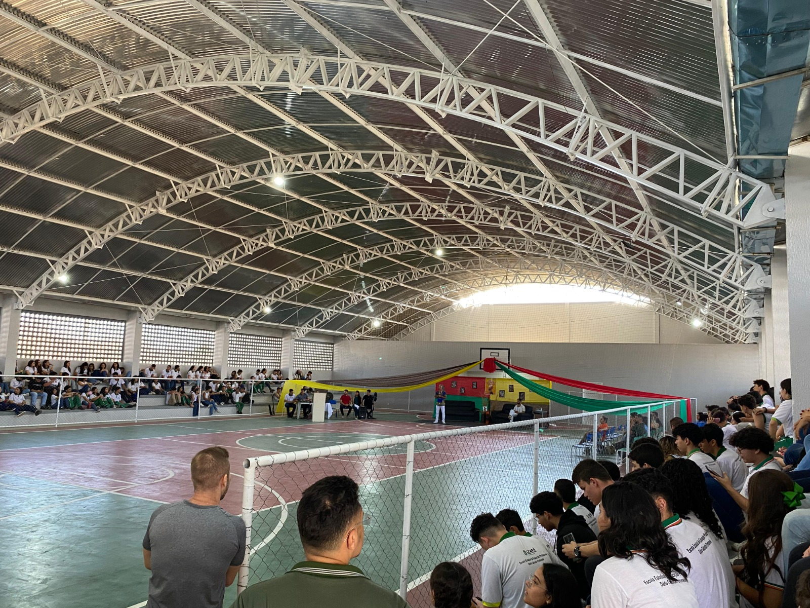

Sobre a Mostra
A Mostra Cultural Afro-Brasileira é um evento que incentiva a busca pelo conhecimento sobre nossos ancestrais,
desde a sua religião até a sua culinária. Tem como objetivo celebrar a diversidade e a riqueza da cultura
afrodescendente no Brasil.
A Escola Dario Catunda Fontenele realizou duas edições da Mostra Afro, um evento que celebrou a cultura
afro-brasileira por meio de danças, músicas, poesias, exposições e rodas de conversa.
O projeto também contou com uma viagem educativa, onde os alunos vivenciaram experiências únicas ligadas ao
tema, ampliando conhecimentos e fortalecendo o respeito à diversidade.
A Mostra Afro já se tornou um marco na escola, valorizando nossas raízes e promovendo aprendizado de forma
criativa e transformadora.

 Ceará Científico 2025
Ceará Científico 2025